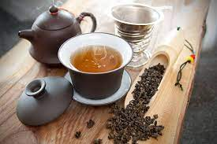
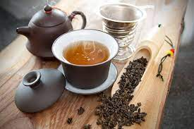

T3: A Place all about Tea
This is a short video on the history of Tea:
Tea is a popular beverage consumed around the world. It is made by steeping tea leaves in hot water, and can be served hot or cold. There are many different types of tea, each with its own unique flavor and health benefits.
History Behind Tea:
Tea has a rich history dating back thousands of years, with its origins in China. According to legend, the Chinese Emperor Shen Nong discovered tea in 2737 BCE when leaves from a nearby Camellia sinensis tree fell into his boiling water. From there, tea drinking became popular throughout China and eventually spread to other parts of the world.
Today, there are countless varieties of tea available, each with their own unique flavor and aroma. Some of the most popular types of tea include black tea, green tea, oolong tea, white tea, and herbal tea. Each type of tea is produced using different methods and has its own distinct taste and health benefits.
Did you know that tea is the second most consumed beverage in the world, after water? It's also a great source of antioxidants and has been linked to a variety of health benefits, such as reducing the risk of heart disease and stroke.
In addition to its health benefits, tea also has cultural significance in many parts of the world. In Japan, for example, the tea ceremony is a highly respected and revered tradition that dates back centuries. In India, chai tea is a staple beverage that is enjoyed by people of all ages.
At T3, we're passionate about all things tea and are dedicated to sharing our knowledge and expertise with our readers. Whether you're interested in learning more about the history of tea, the health benefits of different types of tea, or simply want to explore new and exciting tea flavors, we've got you covered. So why not grab a cup of tea and join us on this journey of discovery?
Types of Tea
Some of the most popular types of tea include:
- Green Tea
- Black Tea
- Oolong Tea
- White Tea
- Herbal Tea
Health Benefits of Tea
Tea has many health benefits, including:
- Reduced risk of heart disease
- Lowered blood pressure
- Improved brain function
- Increased metabolism
- Reduced risk of certain cancers
 
